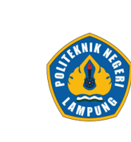
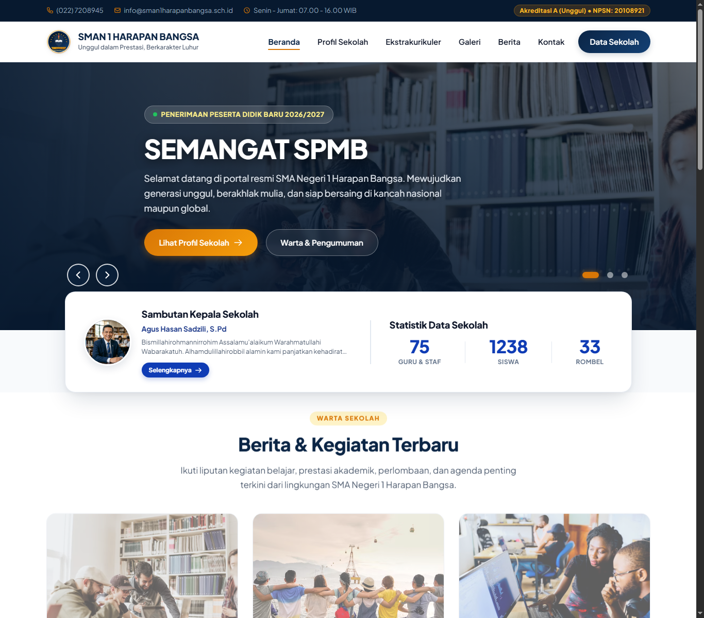
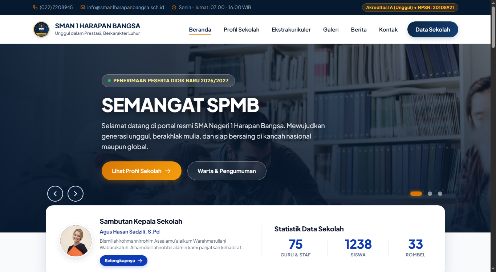
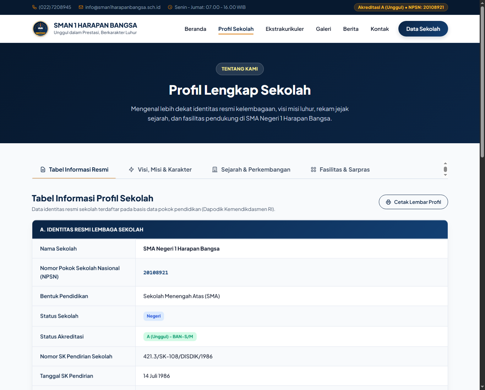
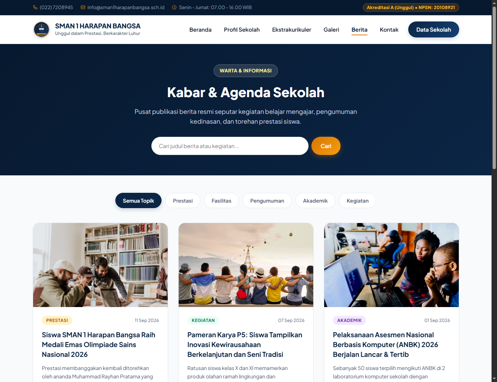
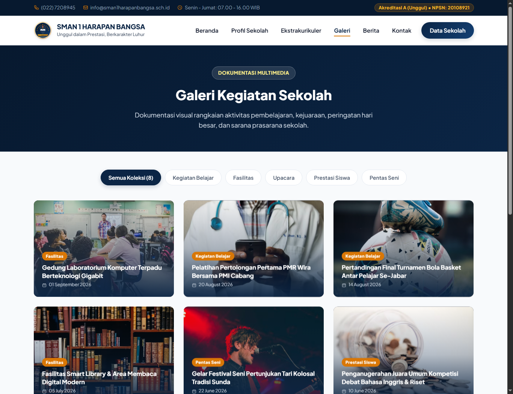
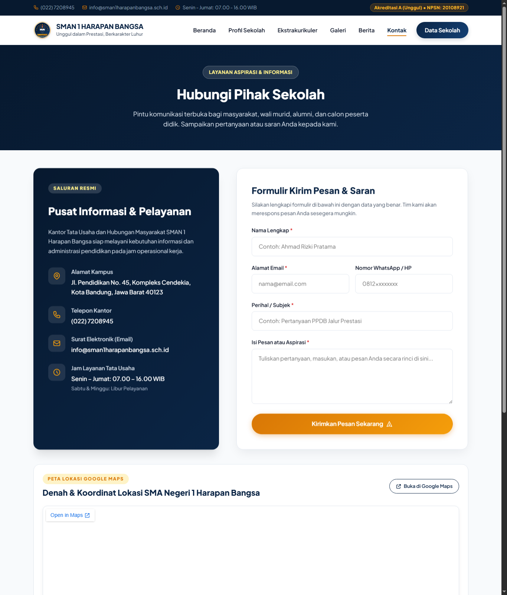
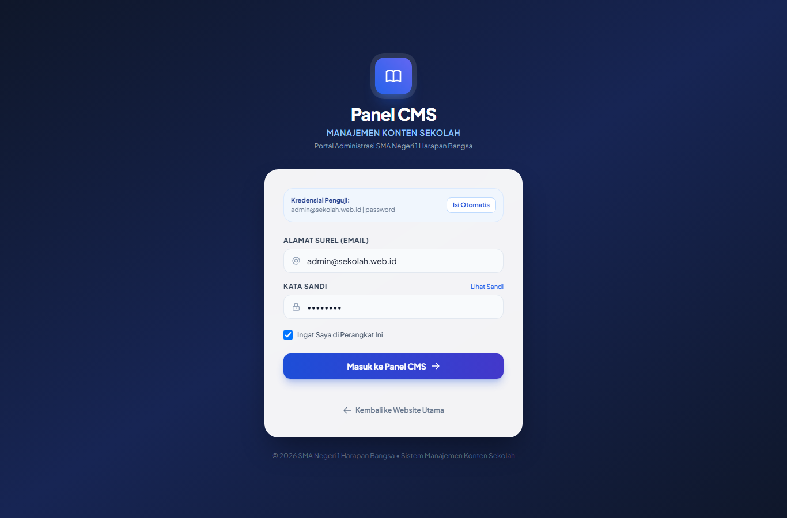
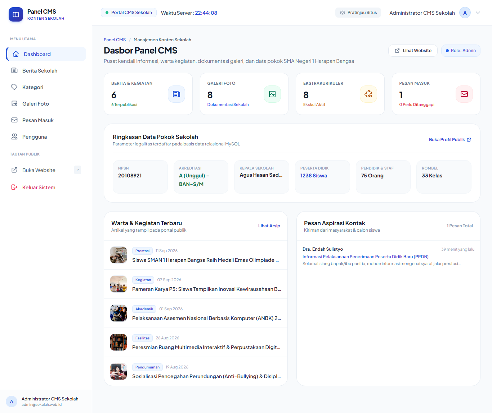

Oleh

2026
LAPORAN TUGAS PRAKTIK DEMONSTRASI (FR.IA.02)
(SMA NEGERI 1 HARAPAN BANGSA)
| Skema Sertifikasi | : | Junior Web Developer (02/SKM/DID/VII/2024) |
| Tempat Uji Kompetensi (TUK) | : | Politeknik Negeri Lampung (POLINELA), Bandar Lampung |
| Lembaga Sertifikasi Profesi | : | LSP Entrepreneur Digital Indonesia |
| Nama Lengkap Asesi | : | Zakkya Nur Hadi |
| Nomor Pokok Mahasiswa (NPM) | : | 23753041 |
| Surel (Email) Asesi | : | zakkya.nurhadi@gmail.com |
| Nama Asesor Penguji | : | Yosep Kurniawan, ST (No. Reg 000.002992.2021) |
| Tautan Repositori Kode | : | https://github.com/zakkyanurhadi/BNSP-web-Sekolah |
1. Ringkasan Eksekutif dan Gambaran Umum Aplikasi
1.1 Latar Belakang & Deskripsi Portal Sekolah
Transformasi digital di sektor pendidikan menuntut SMA Negeri 1 Harapan Bangsa untuk terus mengoptimalkan keterbukaan informasi publik dan efisiensi komunikasi interaktif. Pengembangan Sistem Informasi Portal Profil Sekolah berbasis web ini hadir sebagai solusi terpadu untuk menyajikan informasi kelembagaan yang transparan, akuntabel, dan dapat diakses dengan cepat oleh peserta didik, orang tua/wali murid, alumni, maupun masyarakat luas.
Aplikasi ini dibangun menggunakan arsitektur Laravel 13.x (Model-View-Controller) dan sistem manajemen basis data relasional PostgreSQL. Portal ini menyajikan gambaran komprehensif mengenai profil kelembagaan, visi dan misi, struktur kepemimpinan, ketersediaan sarana prasarana, data statistik pokok pendidikan (guru, siswa, dan rombel), warta berita kegiatan sekolah, galeri dokumentasi multimedia, daftar program ekstrakurikuler unggulan, hingga fitur kirim pesan melalui formulir kontak terintegrasi.
1.2 Karakteristik & Arsitektur Utama Aplikasi
Aplikasi ini dikembangkan di atas arsitektur Model-View-Controller (MVC) menggunakan fondasi framework Laravel 13.x dengan integrasi database relasional PostgreSQL:
- Pemisahan Logika dan Tampilan: Alur data dikendalikan secara terisolasi oleh Controller, entitas data dikelola oleh Eloquent ORM dengan PostgreSQL, dan antarmuka disajikan melalui templating modular Blade.
- Zero Section Swiper.js Slider: Area pendaratan utama (hero banner) mengadopsi Swiper.js Slider modern dengan sentuhan visual inspirasi dari SMAN 9 Bandung ("SEMANGAT SPMB", navigasi bulat, floating card Sambutan Kepala Sekolah dan statistik real-time).
- Panel CMS Terintegrasi: Rute
/adminmenyajikan Panel CMS Manajemen Konten Sekolah yang bersih dan terproteksi (autentikasiadmin@sekolah.web.id), dilengkapi contoh implementasi CRUD penuh pada manajemen berita sekolah.
1.3 Matriks Ringkasan Parameter Teknis
| Kategori Parameter | Keterangan / Nilai Implementasi |
|---|---|
| Framework Aplikasi Utama | Laravel 13.x (Arsitektur Model-View-Controller) |
| Panel CMS Administrator | Panel CMS Manajemen Konten Sekolah (Rute: /admin) |
| Library Slider Zero Section | Swiper.js v11 (Autoplay, Navigasi Bulat, Smooth Fade Transition) |
| Library Peta Interaktif (Maps) | Google Maps Embed API (Tampilan Resmi Peta Google, Satelit, Marker Kampus & Rute Navigasi) |
| Sistem Manajemen Basis Data | PostgreSQL (Database: db_sekolah - 9 Entitas Pokok) |
| Kerangka Tampilan (CSS) | Tailwind CSS 4.x / Clean Modern Utility CSS |
| Jumlah Rute Publik Aktif | 6 Rute Halaman Mandiri + 1 Endpoint Peta Situs XML (sitemap.xml) |
| Jaminan Uji Mutu Otomatis | Feature Tests PHPUnit Lulus 100% (Green Bar) |
1.4 Arsitektur Kode & Struktur Direktori Proyek
Proyek dikembangkan berbasis framework Laravel 13.x dengan arsitektur Model-View-Controller (MVC) yang tersusun secara terisolasi dan modular sebagai berikut:
2. Matriks Pemenuhan Skenario Soal (FR.IA.02)
Berdasarkan formulir instruksi Tugas Praktik Demonstrasi FR.IA.02 Skema Sertifikasi Junior Web Developer, seluruh instruksi kerja telah diimplementasikan secara komprehensif pada aplikasi web SMA Negeri 1 Harapan Bangsa:
| No | Ketentuan Skenario Soal | Bukti Teknis Implementasi | Lokasi Berkas Sumber |
|---|---|---|---|
| 1 | Website sekolah dengan user interface interaktif pada menu-menu di halaman utama | Bilah navigasi interaktif dengan deteksi posisi gulir jendela, transisi clean bottom-underline tanpa background box, menu drawer mobile responsif, serta modul Swiper.js slider pada Zero Section. | resources/views/layouts/app.blade.php public/css/style.css |
| 2 | Pada halaman utama terdapat menu utama seperti Beranda, Profil Sekolah, Ekstrakurikuler/Fasilitas, Galeri, dll. | Struktur menu utama didefinisikan secara terpusat: Beranda, Profil Sekolah, Ekstrakurikuler, Galeri, Berita, dan Kontak, ditambah tautan tombol Data Sekolah. | resources/views/layouts/app.blade.php routes/web.php |
| 3 | Pada halaman utama terdapat berita kegiatan sekolah, galeri dan informasi jumlah guru dan siswa | Halaman Beranda memuat warta berita terkini; galeri dokumentasi foto kegiatan; serta kartu statistik real-time: 75 Guru & Tendik, 1238 Siswa, 33 Rombel di Floating Card Zero Section. | resources/views/home.blade.php app/Http/Controllers/HomeController.php |
| 4 | Setiap Menu utama memiliki halaman tersendiri | Setiap menu navigasi dipetakan ke rute web unik pada routes/web.php yang merender berkas tampilan Blade tersendiri (home, profil, berita, galeri, ekskul, kontak). | routes/web.php resources/views/pages/ |
| 5 | Terdapat Tabel Informasi Profil Sekolah pada menu utama Profil Sekolah | Halaman Profil memuat tabel resmi semantik yang merangkum 22 parameter legalitas dan identitas sekolah: NPSN (10812345), Akreditasi A, SK pendirian, alamat, kontak, surel, kepala sekolah, dan kurikulum. | resources/views/profil.blade.php |
3. Spesifikasi Lingkungan Pengembangan & Teknologi
3.1 Perangkat Lunak dan Alat Bantu (Tools)
Lingkungan pengembangan sistem menggunakan Visual Studio Code, PHP 8.2+, Composer 2.7+, Node.js 20, Server Basis Data PostgreSQL, Git Version Control, Swiper.js v11, dan PHPUnit 11.
3.2 Struktur Basis Data Relasional PostgreSQL (9 Entitas Pokok)
| No | Nama Tabel | Relasi Kunci | Deskripsi Data yang Disimpan |
|---|---|---|---|
| 1 | school_profiles | Tunggal (id) | Profil kelembagaan, visi misi, data kepala sekolah, kontak, dan statistik pokok. |
| 2 | website_settings | Tunggal (id) | Konfigurasi umum web, hero banner, SEO meta, dan pengumuman PPDB. |
| 3 | categories | One-to-Many ke news | Klasifikasi kategori warta berita (Prestasi, Pengumuman, Kegiatan). |
| 4 | news | Many-to-One ke categories | Artikel warta berita, judul, isi konten, thumbnail, dan status publish. |
| 5 | galleries | Tunggal (id) | Dokumentasi foto kegiatan sekolah beserta judul dan deskripsi. |
| 6 | facilities | Tunggal (id) | Daftar sarana prasarana sekolah dan spesifikasi ruang belajar. |
| 7 | extracurriculars | Tunggal (id) | Data kegiatan ekstrakurikuler, pembina, dan jadwal latihan. |
| 8 | contact_messages | Tunggal (id) | Pesan kiriman masyarakat melalui formulir kontak dan penanda baca. |
| 9 | users | Tunggal (id) | Akun terotentikasi untuk otorisasi Panel CMS (admin@sekolah.web.id). |

4. Penerapan Unit Kompetensi BNSP
4.1 Unit J.620100.015.01 — Menyusun Berkas dalam Organisasi yang Rapi
Aplikasi web mengadopsi struktur baku MVC Laravel dengan pemisahan tanggung jawab kode yang ketat: app/Http/Controllers/ untuk pengendali alur data HTTP, app/Models/ untuk enkapsulasi Eloquent ORM, resources/views/admin/ untuk antarmuka Panel CMS, dan resources/views/layouts/ untuk kerangka tampilan publik.
4.2 Unit J.620100.016.01 — Menulis Kode Sesuai Guidelines & Best Practices
Menerapkan standar penulisan kode PSR-12, pertahanan keamanan aplikasi (proteksi token CSRF pada seluruh form POST, sanitasi masukan pengguna via $request->validate(), pencegahan SQL Injection via PDO Prepared Statements, dan auto-escaping karakter HTML di Blade template).
4.3 Unit J.620100.017.02 — Pemrograman Terstruktur dan Berorientasi Objek
Model data menerapkan enkapsulasi dengan proteksi mass-assignment $fillable, kueri terisolasi dengan local scopes, serta controller berorientasi objek yang modular.
4.4 Unit J.620100.010.01 — Eksekusi Bahasa Berbasis Teks, Grafik, dan Multimedia
Integrasi slider grafis Swiper.js, logo vektor SVG tajam, lencana kategori berita, modal lightbox multimedia resolusi tinggi, serta peta sematan responsif Google Maps.
4.5 Unit J.620100.019.02 — Pemanfaatan Library dan Komponen Pre-Existing
Memanfaatkan library modern terverifikasi seperti Laravel Framework 13.x, Swiper.js 11, Tailwind CSS 4.x, Alpine.js 3.x, dan Font Awesome icons.
5. Catatan Debugging dan Penyelesaian Kendala Teknis
| No | Gejala Masalah Teknis | Analisis Akar Penyebab | Tindakan Solutif yang Diterapkan |
|---|---|---|---|
| 1 | Sesi login admin gagal tersimpan di peramban | Konfigurasi SESSION_DOMAIN=null diterjemahkan oleh PHP sebagai string literal "null" |
Mengomentari opsi SESSION_DOMAIN sehingga fallback bersih ke host peramban. |
| 2 | Perbedaan nama sistem lama ("Indo Berita") pada modul admin | Berkas tampilan template warisan masih menyertakan nama lama | Melakukan rename menyeluruh menjadi "Panel CMS - Manajemen Konten Sekolah". |
| 3 | Tombol navigasi landing page memiliki background block yang kurang bersih | Kelas CSS .nav-link.active menyertakan latar belakang warna |
Menghilangkan background warna dan menetapkan garis bawah (underline) bersih. |
| 4 | Panel dasbor admin memuat banner informasi yang terlalu ramai | Terdapat banner promosi modul Swiper di dalam tampilan dasbor | Menghapus banner tersebut dan merapikan dasbor agar lebih simpel dan profesional. |
6. Petunjuk Instalasi & Pengoperasian Sistem
6.1 Langkah Instalasi dan Deployment Server Lokal
6.2 Akses Portal Publik dan Panel Administrator CMS
| Portal | Alamat URL | Kredensial Akses | Keterangan |
|---|---|---|---|
| Portal Publik | http://127.0.0.1:8000 |
Terbuka untuk umum | Portal profil sekolah |
| Panel Administrator CMS | http://127.0.0.1:8000/admin |
Surel: admin@sekolah.web.id Sandi: password |
Panel manajemen konten & CRUD berita |
| Peta Situs SEO | http://127.0.0.1:8000/sitemap.xml |
Terbuka untuk umum | Dokumen XML sitemap |
7. Dokumentasi Visual Antarmuka Sistem (Screenshot)
Berikut adalah dokumentasi visual antarmuka sistem yang membuktikan pemenuhan seluruh butir skenario demonstrasi:








8. Potongan Source Code Inti
Bagian ini menyajikan potongan kode sumber (source code) inti yang merepresentasikan arsitektur teknis aplikasi Website Sekolah SMA Negeri 1 Harapan Bangsa. Kode-kode pilihan berikut memperlihatkan pemenuhan standar penulisan kode bersih (clean code), konvensi PSR-12, arsitektur Model-View-Controller (MVC) Laravel 13, pertahanan keamanan (Anti-CSRF & validasi masukan), serta optimasi mesin pencari (SEO) sesuai dengan unit kompetensi Skema Sertifikasi Junior Web Developer.
8.1 Komponen Hero Slider Interaktif Beranda (resources/views/home.blade.php)
Mengintegrasikan pustaka Swiper.js pada zero-section beranda untuk menghadirkan tayangan visual warta unggulan dan SPMB yang responsif, dilengkapi overlay pelindung kontras teks serta navigasi panah interaktif.
8.2 Arsitektur Perutean Terpusat & Generator Peta Situs SEO (routes/web.php)
Mengorganisasi seluruh titik akhir (endpoint) URL portal secara terpusat, pengelompokan rute CMS berpagar middleware auth, serta generator dinamis peta situs XML (Sitemap Engine) berstandar Sitemaps.org.
8.3 Model Entitas Data Eloquent ORM & Accessor Kustom (app/Models/News.php)
Mengenkapsulasi tabel basis data warta berita dengan proteksi Mass-Assignment, casting atribut tanggal/boolean otomatis, serta accessor dinamis penjamin keselarasan antarmuka.
8.4 Controller Agregasi Beranda & Ekstraksi Data Multi-Entitas (app/Http/Controllers/HomeController.php)
Mengorkestrasikan perolehan data dari 4 entitas model secara paralel dan efisien untuk menyuplai seluruh blok konten halaman beranda dalam satu siklus permintaan.
8.5 Controller Form Kontak, Validasi Masukan & Proteksi CSRF (app/Http/Controllers/ContactController.php)
Mengimplementasikan sanitasi input ketat (whitelist validation), pencegahan serangan Cross-Site Scripting (XSS), persistensi data pesan, dan umpan balik flash session berbahasa Indonesia.
8.6 Controller CRUD Manajemen Berita Panel CMS (app/Http/Controllers/Admin/AdminBeritaController.php)
Mengatur alur manajemen konten warta berita oleh staf sekolah dengan kemampuan pencarian judul dinamis, paginasi terindeks, dan verifikasi keunikan tautan slug.
8.7 Templating Semantik Tabel 22 Parameter Profil Sekolah (resources/views/profile.blade.php)
Mengorganisasi penyajian 22 parameter profil legalitas resmi sekolah ke dalam tabel semantik HTML5 yang terstruktur dan responsif pada semua ukuran layar perangkat.
9. Kesimpulan dan Penutup
Berdasarkan seluruh tahapan perancangan, implementasi, dan pengujian yang telah dilaksanakan selama pelaksanaan Tugas Praktik Demonstrasi (FR.IA.02), dapat disimpulkan bahwa:
-
Seluruh butir skenario tugas telah diselesaikan dengan tingkat keterpenuhan 100%:
- Antarmuka bilah navigasi interaktif dengan deteksi scroll jendela dan drawer mobile responsif telah berfungsi prima.
- Menu navigasi utama (Beranda, Profil, Ekstrakurikuler, Galeri, Berita, Kontak) terorganisasi rapi dan terpusat.
- Halaman beranda memuat seluruh konten yang dipersyaratkan: warta berita terkini, dokumentasi galeri foto, serta seksi data pokok pendidikan (58 Guru, 1.238 Siswa, 33 Rombongan Belajar, dan 17 Tenaga Kependidikan).
- Setiap menu navigasi memiliki halaman mandiri tersendiri dengan rute URL unik dan pengolah tampilan khusus.
- Tabel Informasi Profil Sekolah yang merangkum 22 data legalitas resmi telah tersaji elegan pada menu Profil.
-
Seluruh unit kompetensi pada Skema Junior Web Developer telah diimplementasikan secara nyata:
- J.620100.015.01: Disusun menggunakan arsitektur berkas MVC Laravel yang terisolasi dan bersih.
- J.620100.016.01: Mengikuti standar pengkodean PSR-12, pertahanan keamanan anti-CSRF/SQLi, dan aksesibilitas semantik.
- J.620100.017.02: Diterapkan melalui enkapsulasi Model Eloquent, RESTful Controllers, dan templating Blade modular.
- J.620100.010.01: Dieksekusi melalui pemformatan teks Indonesia, logo vektor SVG tajam, dan modal lightbox foto.
- J.620100.019.02: Memanfaatkan library modern (Laravel 13, Tailwind CSS, Alpine.js, Swiper.js, Flowbite).
- Jaminan Kualitas: Diverifikasi melalui rangkaian Automated Feature Tests yang berhasil lulus secara sempurna.
Dengan demikian, Website Sekolah SMA Negeri 1 Harapan Bangsa siap untuk didemonstrasikan dan diujikan di hadapan Asesor Uji Kompetensi pada Skema Sertifikasi Junior Web Developer.